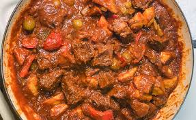

Savory Filipino Caldereta

Beef Caldereta is a hearty Filipino stew made with tender beef chunks, simmered in a rich tomato-based sauce with vegetables and liver spread for added depth and creaminess. This dish is often served on special occasions and family gatherings and is loved for its bold, savory flavor and soft, melt-in-your-mouth meat.
INGREDIENTS
- 1 kg beef (kaldereta cut or stewing beef), cubed1 kg beef (kaldereta cut or stewing beef), cubed
- 2 medium potatoes, cubed
- 1 large carrot, sliced
- 1 red bell pepper, sliced
- 1 green bell pepper, sliced
- 1 small can liver spread (or 2 tbsp liver pâté)
- 1 small can tomato sauce (about 1 cup)
- 1 onion, chopped
- 4 cloves garlic, minced
- 1 cup beef broth or water1 cup beef broth or water
- 2–3 tbsp cooking oil
- Salt and pepper to taste
- Optional: chili flakes for spice
DIRECTIONS
- Heat oil in a pan and sauté garlic and onion until fragrant.
- Add the beef and cook until browned on all sides.
- Pour in the tomato sauce and beef broth. Bring to a boil.
- Lower heat and simmer for about 45 minutes to 1 hour, or until beef is tender.
- Add the liver spread, stir well, and simmer for 5 minutes.
- Add potatoes and carrots. Cook until they begin to soften.
- Add bell peppers and cook for another 5 minutes.
- Season with salt, pepper, and optional chili flakes.
- Serve hot with steamed rice.